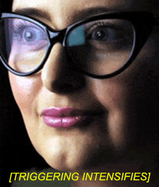

Why does simply disagreeing with leftists sometimes make them scream like they’re being tortured? First we’ll explore a recent mass “triggering”.
Trump Derangement Syndrome
Hillary Clinton is uncharismatic, petulant, and frumpy. While Trump’s rallies drew huge crowds, she could barely pack a high school auditorium. Events during the campaign revealed her questionable finances, wiping her illicit email server, etc. Cupcake certainly isn’t JFK in a skirt; she even makes LBJ seem halfway decent.
How did Democrats react when their very uninspiring candidate lost? At her campaign, a sea of young faces appeared absolutely shell-shocked. Some even wept. Stronger reactions occurred elsewhere, including a tidal wave of furious social media posts, and even wailing in public.
In 2008 and 2012, liberals gloated immodestly when The Lightworker won, though it’s hard to blame them for exuberance. Conservatives weren’t too thrilled, but neither were they in tears. I don’t recall anyone howling in the streets,or demanding to “take me off your friends list if you voted for Obama”. What might explain the striking difference in reactions?
Generation Snowflake
When leftists get “triggered” after hearing ideas they don’t like, later they’ll describe how they were quaking with rage, about to vomit, bursting into tears, etc. To the rest of us, that sort of reaction seems pretty disproportionate. We might suspect it’s merely butthurt hyperbole. Actually, maybe they really do freak out that badly.
What’s the matter? Proverbially, “sticks and stones may break my bones, but names will never hurt me.” Being contradicted should be even less painful than being insulted. Possible explanations for inability to handle disagreement include:
The younger ones might simply be a product of their times, needing some long-overdue “adulting”. (That wasn’t even a word until recently.) However, that doesn’t explain older ones overreacting. For instance, Paul Krugman still seems obsessed with moping and pouting on Twitter, as if The Donald stole his pacifier. Dude, get a life!
Some people are just thin-skinned. At a certain level, mental pain is interpreted in a similar way to physical pain. People can toughen themselves through practice. That’s why minor injuries don’t make adults scream like babies. Likewise, normal grownups can handle ordinary social stresses (like conflicting opinions) without throwing tantrums. However, certain critical functions remain underdeveloped in people who never learn to butch up.
The neurobiology of triggering
This is why they clutch their pearls and get the vapors.
Suppose you see three rough-looking characters walking your way. They haven’t done anything to you, but they might. Instantly, you’ll assess their behavior and threat potential. If you remain guardedly calm, you can consider options logically: play it cool, negotiate, bluff, change direction, Jedi Mind Trick, etc. If you’re too scared to think, your options are limited to running away screaming, freezing in terror, or going berserk.
Obviously, reacting appropriately avoids unnecessary trouble. Obliviousness to danger makes someone easy prey. So does acting too submissive. Unwarranted provocation escalates the situation or looks insecure. Fighting when unnecessary causes obvious problems. The least bad failure result is looking stupid.
In brief, the amygdalae are two small brain structures in the limbic system. Terror from a perceived major threat causes an “amygdala hijack“. It’s a fast circuit—the sudden panic shuts off rational thought, allowing a rapid “fight, flight, or freeze” reaction. Larger amygdalae allow one to assess threats more accurately. Because of neuroplasticity, keeping cool is a learnable skill.
Social stress and real danger are different, but the mind reacts similarly. (That’s why Approach Anxiety can make someone freeze up during a set, or avoid trying.) Arguments cause social stress, even when there’s zero chance of a fight resulting. Not having the learned mental toughness to handle disagreements is an immature characteristic, leading to overreactions or even rage.
Princess Amygdala

To summarize a long discussion, men have larger amygdalae than women do, and signals are processed somewhat differently. (Once during high school, several girls immediately shrieked when the power blipped out briefly—apparently rather ill-prepared for actual urban survival situations.) It makes basic evolutionary sense; tribesmen had to be able to think tactically under pressure, and not panic if confronted by large animals or enemies. Tribeswomen were better served by hiding, or running and screaming to summon help.
Also, r/K selection is a factor. Carnivores (K-selected) have large amygdalae; they must understand their chances against another animal. Being too cautious means they don’t eat; overconfidence means they get eaten. Herbivores (r-selected) have small amygdalae. All they can do is run or play possum. A rabbit trying to fight a wolf will earn a Darwin Award in the bunny division.
Interestingly, liberals—the “rabbit people”—tend to have smaller amygdalae. This does approximately fit political stereotypes. Right-wingers might be very vigilant: survivalists, gun collectors, and conspiracy-mongers like me. Liberals worry about all the wrong things. They don’t understand civilizational threats, and either react apathetically or assist the enemy. Still, I wouldn’t make too much of the correlation; people can change political opinions. If things were that simple, I’d give martial arts academy coupons to hipsters.
Again, arguments cause social stress, subconsciously seeming like a threat. Given all of the above, take a wild guess here. What types of people can handle disagreements and stay logical? What types will take it as a personal attack and react like Godzilla is trying to eat them?
How to melt special snowflakes

Or if you’re in a hurry, this works too!
Armed with this knowledge, you can leave liberals stunned and twitching, without having to buy a Taser. Granted, that’s kind of a dick move, but sometimes the situation just calls for it.
Again, a panic reaction is “fight, flight, or freeze”. It’s easy enough to goad leftists into shouting matches. For example, tell a tranny to grow a pair (or use the correct pronoun). Tell the feminist that she looks cute when she’s mad. They’ll look stupid, especially if you’re staying cool and not shouting back, but there’s little gained.
You can make them leave you alone too, or even produce submission. As the SJW Survival Guide states:
Fortunately, SJWs are highly emotional, cowardly, and prone to depression, so demoralizing them tends to be considerably easier than you might imagine. They will still hate you, but after repeatedly meeting with staunch and confident opposition, they will usually decide to leave you alone and go in search of less difficult prey.
For example, an old friend of mine often got politically-motivated harassing phone calls. He told one of them that he was the reincarnation of a certain meanie from history, and got pretty outrageous with it. The caller quickly hung up and never bothered him again. Once I was nearly ambushed by several campus lefties. They greatly outnumbered me, but they didn’t mess with me after I showed some audacity and a “zero fucks given” attitude. That’s how to handle rabbit people.
Best of all is staying calm and destroying their worldview. Tell the tranny that the answer to his mental problems is embracing reality, not living in delusion or mutilating himself. Tell the feminist she’s been duped by evil people who’ve harmed society. They’ll still get “triggered”, but hopefully you’ll plant some seeds of doubt.
Read More: I Made A German Man Cry Because I Criticized Globalism And Muslim Refugees